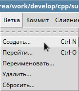
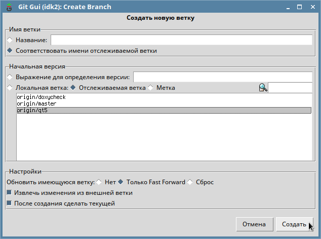
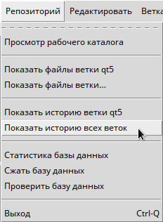
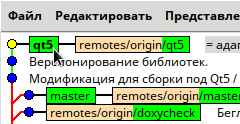

Допустим, ваш коллега создал новую ветку и отправил ее на сервер в основной репозитарий. Вам необходимо переключиться на эту ветку. Как это сделать?
Чтобы переключиться на новую ветку, нужно сделать следующие шаги.
Подключение через консоль
Узнать имя новой ветки
Чтобы узнать имя новой ветки, надо получить список веток на сервере. Делается это последовательно командами:
$ git pull
- этой командой получаются данные о последних изменениях в удаленном репозитарии. Если эту команду не вызывать, новую ветку в удаленном репозитарии можно просто не увидеть. Далее дается команда получения перечня (списка) имен удаленных веток:
$ git branch --remotes
origin/HEAD -> origin/experimental
origin/experimental
origin/master
origin/usedController
Мы видим, что есть, к примеру, ветка usedController, которую мы хотим получить себе и переключиться на нее.
Создать локально новую ветку, получить изменения, сделанные в этой ветке, переключиться на новую ветку
Все действия выполняются одной командой:
$ git checkout -b [имя_локальной_ветки] [имя_удаленного_репозитария]/[имя_удаленной_ветки]
В нашем случае команда будет выглядеть так:
$ git checkout -b usedController origin/usedController
Команда git checkout -b создаст локально новую ветку, если ее не существует. Имя новой ветки будет usedController. Данные для наполнения ветки будут взяты из origin/usedController. В результате выполнения данной команды произойдет переключение на новую ветку.
Подключение через утилиту git gui
Те же самые действия можно сделать через утилиту gui gui.
Вначале надо выбрать в меню пункт Ветка - Создать:

В открывшемся окне в поле "Имя ветки" надо переключиться на пункт "Соответствовать имени отслеживаемой ветки". В области настроек "Начальная версия" должен быть выбран пункт "Отслеживаемая ветка". При этом в списке веток будут отображены удаленные ветки. Необходимо выбрать нужную удаленную ветку и нажать кнопку "Создать":

Чтобы убедиться, что локальная ветка создалась и указывает на удаленную ветку, можно нажать Репозиторий - Показать историю всех веток:

В ветках будет видна локальная ветка, обозначенная толстым шрифтом на зеленом фоне, и соответствующая ей удаленная ветка:

Новая ветка с сервера подключена.